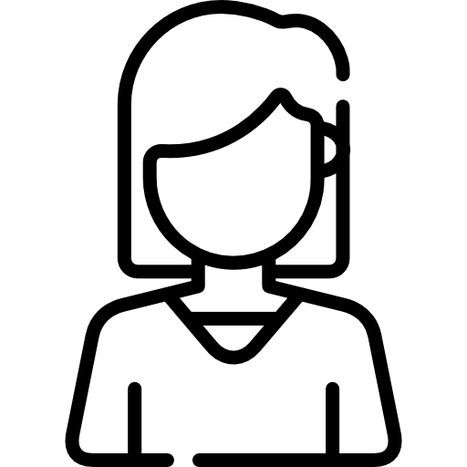

РЕЗЮМЕ
Негодова Тетяна
Особисті дані

Дата народження
4.12.1979р.
 +380502021741
+380502021741
 https://github.com/IT-Tanka
tanegodova@gmail.com
Освіта
https://github.com/IT-Tanka
tanegodova@gmail.com
Освіта
Диплом спеціаліста з відзнакою Сєвєродонецького технологічного інституту Східноукраїнського національного університету ім. В.Даля за спеціальністю «Комп’ютерні системи та мережі» кваліфікації інженера з комп’ютерних систем(2002р.)
Досвід роботиз 2002р. по 2006р. – інженер-системотехнік в ПП «Технополіс»
з 2007р. по 2009р. – приватний підприємець
з 2017р. -freelancer
- MS Office(Word, Excel)
- 1С
- Photoshop, Figma, Avocode
- Visual Studio Code, PhpStorm
- HTML
- BEM
- CSS
- Styled-components|CSS-modules
- Adaptive layout
- PixelPerfect
- JavaScript(ES5, ES6)
- Git|Github
- English (intermediate)
Вмотивованість, відповідальність, уважність, комунікабельність, вміння працювати у команді, швидке навчання